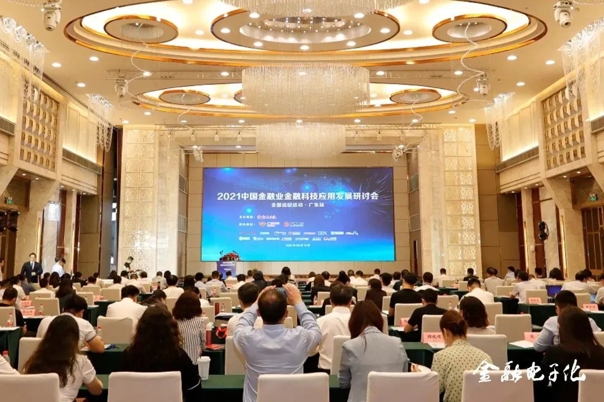
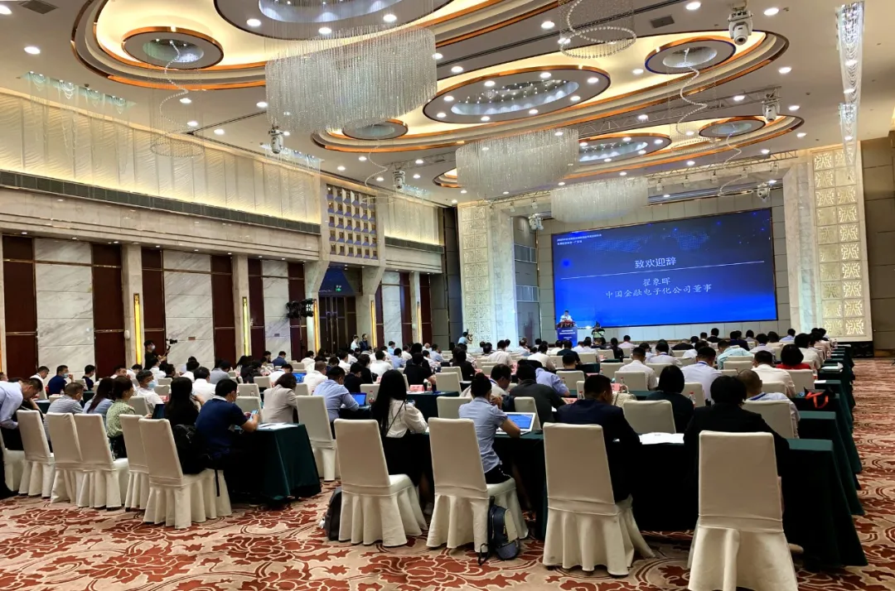
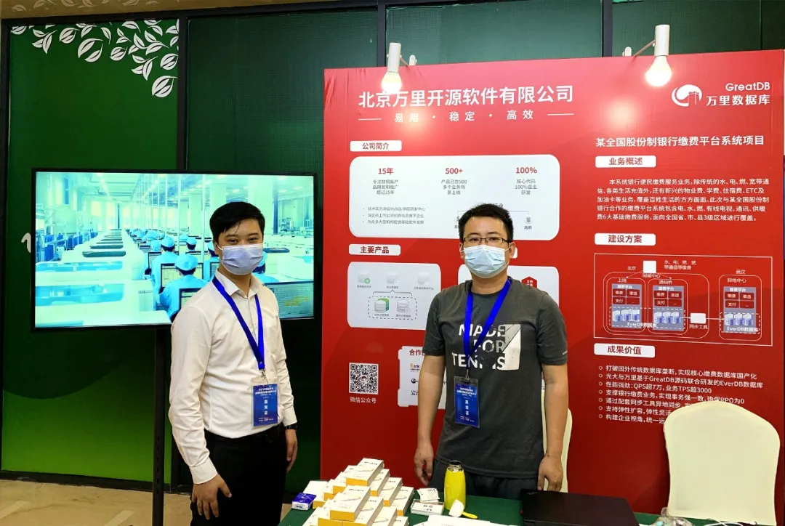
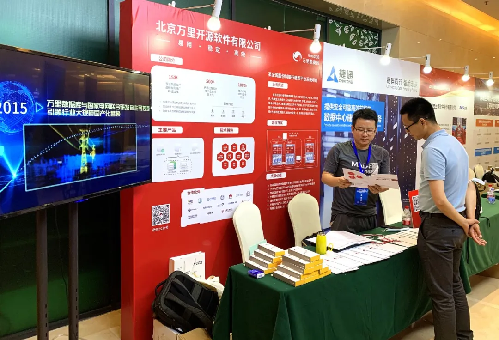

展会 | 赋能金融科技数字化转型 万里数据库受邀2021中国金融业金融科技应用发展研讨会（广东站）
5月13日，由《金融电子化》杂志社主办，广东省农村信用社联合社、广州银行协办的“2021中国金融业金融科技应用发展研讨会全国巡回活动·广东站”在广州成功召开。会议围绕着“聚焦科技创新，聚力数字金融”这一主题，聚集紫光、中兴通讯、IBM、平安银行、广发银行及多个地市银行，围绕如何加快科技创新、金融服务经济高质量发展等热点话题展开交流研讨。
作为国内新一代分布式数据库知名企业，万里数据库受邀出席会议并进行核心数据库产品与解决方案的展示，助力金融行业数字化实践与转型。

图
2021中国金融业金融科技应用发展研讨会广东站召开
活动现场，中国人民银行广州分行党委委员、副行长陈玉海、中国金融电子化公司董事翟象晖、招商银行首席信息官江朝阳、广东省农村信用社联合社副主任张艳、《金融电子化》杂志社副总编邵山、中国人民银行广州分行科技处副处长丁彩虹等重磅嘉宾悉数出席，与到场的各金融机构负责人、金融从业者、行业专家及企业代表一起，分享实践经验、探讨发展路径，共话产业创新，促进产业生态健康发展。

图
研讨会现场开幕式
此次展会，万里数据库特派技术专家与业务专家，在展位上与参观嘉宾分享公司在金融领域的技术成果与应用实践。在金融领域，万里数据库参与了中国人民银行分布式数据库金融实验室测试，并成为首批通过测试的数据库厂商。业务拓展上，万里数据库与多家金融企事业机构达成合作，在重点应用系统落地多个项目案例。
参观嘉宾对万里数据库的金融解决方案及应用实践给予充分肯定，并希望未来能借助万里的产品及技术解决方案，助力更多金融企事业单位顺利实现数字化转型。


▲嘉宾前往万里数据库展位咨询
NEWS
2021年是“十四五”开局之年，更是信创发展的大年。立足已有成绩，紧抓产业机遇期，进一步做大做强产业生态成为当前共识。万里数据库自2019年4月加入信创工委会，并入选《2020年度中国信创TOP500》，2021年3月入围央采名录。生态建设方面，经过多次兼容适配工作的推进合作，公司核心数据库产品已全面兼容国产主流软硬件平台，为推动信创产业发展奠定技术基础。
未来，万里数据库将继续围绕新一代分布式数据库技术，持续打造自主创新的产品及解决方案，聚合国产软硬件产业链上下游之合力，为正在全面铺开的金融、运营商、能源等重点行业客户的数字化转型赋能，助力数字中国建设与发展。
推荐阅读1.展会 | 万里数据库亮相2021光合组织春季领导人峰会 抢抓信创产业发展机遇
2. 福利 | 3306π技术分享会广州站再度启航 免费门票先到先得！
3. 活动 | 万里做客华为开发者大会成都站，解读行业关注话题

扫码二维码
关注公众号